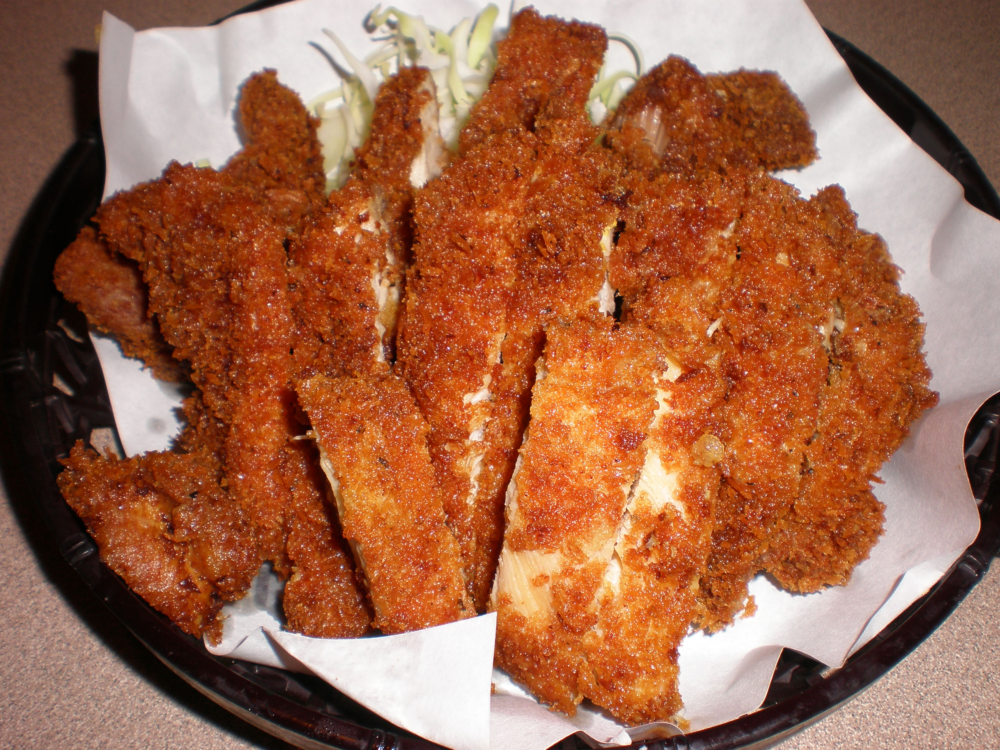

Chicken Katsu
Chicken katsu is a Japanese dish that consists of breaded and deep-fried chicken cutlets. It is typically served with a side of shredded cabbage and a tangy sauce, often tonkatsu sauce, which is similar to Worcestershire sauce.
Chicken katsu is a popular dish in Japan and has also gained popularity in other countries, especially in the United States. It is often served as a main course in Japanese restaurants and can also be found in bento boxes or as a filling in sandwiches.
Ingredients(4 servings)
- 4 skinless, boneless chicken breast halves - pounded to ½-inch thickness
- salt and pepper to taste
- 2 tablespoons all-purpose flour
- 1 egg, beaten
- 1 cup panko bread crumbs
- 1 cup oil for frying, or as needed
Instructions
- Gather the ingredients
- Season chicken breasts on both sides with salt and pepper.
- Place flour, beaten egg, and panko crumbs into separate shallow dishes.
- Coat chicken breasts in flour, shaking off any excess; dip into egg, and then press into panko crumbs until well coated on both sides.
- Heat oil in a large skillet over medium-high heat. Place chicken in the hot oil, and fry until golden brown, 3 or 4 minutes per side. Transfer to a paper towel-lined plate to drain.
- Serve and enjoy.

Image credit: Wikimedia Commons
used under CC BY-SA 3.0
Tip: Try serving with Japanese Salad dressing for dipping
Back to home page